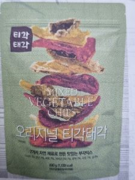
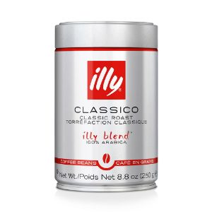
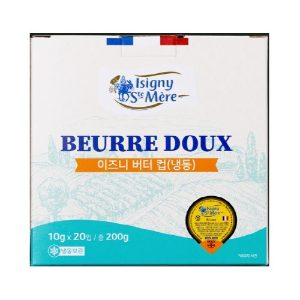
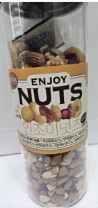

| 상품 | 군마트 | 쿠팡 | 차이 | |
|---|---|---|---|---|
| 오뚜기 해물짬뽕 600 g | 3,900원 | 7,998원 | -51% | |
 | 씨월드 오리지널티각태각 220g | 6,300원 | 10,500원 | -40% |
| 풀무원식품 풀아임리얼순수착즙오렌지 700ml | 5,020원 | 8,545원 | -41% | |
 | 일리 클래식 로스트 빈 250g | 10,230원 | 16,443원 | -38% |
 | 엘에프푸드 이즈니 버터 컵 200g | 7,590원 | 13,800원 | -45% |
| 태웅식품 6년근 고려홍삼정 하루스틱 15g*28포 | 17,300원 | 38,920원 | -56% | |
| 뉴본 용두동 할매 쭈꾸미 400g | 7,190원 | 13,380원 | -46% | |
| 하리보 믹스 사우어 160g | 2,500원 | 5,450원 | -54% | |
| 정성식품 오징어젓400g | 6,960원 | 9,790원 | -29% | |
| 동원홈푸드 경기1공장 우삼겹 600g | 13,490원 | 14,900원 | -10% | |
| 햇반 불고기주먹밥 500g | 4,300원 | 7,775원 | -45% | |
| CJ 국산콩 두부 찌개용 380g | 1,850원 | 2,560원 | -28% | |
| 일팔구삼 도달미 10kg | 38,050원 | 59,480원 | -36% | |
| 콘푸로스트 600g | 3,670원 | 5,050원 | -27% | |
| 사조대림 순창궁 태양초100%우리햅쌀고추장2kg | 9,990원 | 15,980원 | -38% | |
 | 넛츠데이 인조이넛츠 450g | 6,050원 | 11,988원 | -50% |
| 그로브 아보카도 오일 마늘향 250ml | 11,550원 | 15,880원 | -27% | |
| 성경식품 포켓몬김 16개 64g | 3,960원 | 8,380원 | -53% | |
| 동원매운고추참치90g*4 | 4,630원 | 8,700원 | -47% | |
| 오뚜기 옛날당면 1kg | 8,670원 | 11,190원 | -22% | |
식품 말고 다른 것도
더 이상 직접 비교하지 마세요.
군마트 상품을 한곳에 모아 PX 가격과 온라인 가격을 쉽게 비교할 수 있습니다.


이게 실제 화면이에요. 상품을 누르면 바로 열립니다.
국방가족 분들이 조금이라도 편하게 군마트를 이용하셨으면 하는 마음으로 만들었습니다.
국방가족을 위한 작은 재능기부입니다.